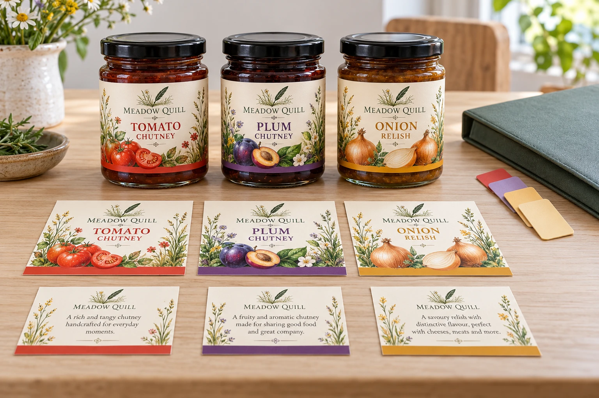

A shared business-information block changes, but only the first flavor file is revised. Another SKU keeps the old text because the range's common source and individual production files were never connected.
Use a where-used map to identify every affected component before releasing a range change. Similar-looking labels do not prove that a correction propagated to them.

AI-generated packaging planning example. Meadow Quill is a fictional brand; not a customer project, production test or usable retail artwork.
Distinguish shared source from copied content
Identify the actual source for each common block and its owner. A common logo or address may appear in several components, while variant-specific information belongs to a different source. Do not assume that visually repeated blocks are automatically linked in the design software.
Ask the designer whether a change updates a live shared resource or requires edits in separate files. Record the actual arrangement. A repeated screenshot or folder name does not show that the production PDF contains the current block.
| Change-impact map | What to identify |
|---|---|
| Changed block | Controlled source ID/revision and approved change |
| Where used | SKU, market/language and front/back/lid component |
| Production output | Exact affected filename or controlled artwork ID |
| Required review | Content owner and any layout/code/geometry consequences |
| New release | Replacement output and approval identity |
| Existing stock | Which versions remain, with disposition decided by the owner |
| Exception | Excluded component and actual reason, not an assumption |
Keep an unverified where-used entry pending. An empty cell does not mean unaffected.
Review the range by dependency, not only by flavor
For a hypothetical chutney range, a brand-address update might affect every back label but no independent lid label. A product-name correction might affect one front, one back and its packing identification. The map follows the actual changed block rather than requiring the same edits to every SKU.
If the new text occupies more space, refer the layout consequence to the appropriate reviewer. Do not copy a corrected block into another file and silently reduce its size to fit. A source approval and an applied layout approval answer related but different questions.
Reconcile the files that will actually be printed
List the replacement output for each affected component and identify the version it supersedes. Ask the recipient to confirm the active set. A revised editable master without an updated production output can leave a printer using the unchanged file.
Keep unchanged components explicitly identified where useful, with the reviewed reason. This reduces unnecessary edits while avoiding a blanket statement that the whole range was updated. A shared visual style should not hide independent file identities.
Give existing labels their own decision
The artwork map identifies a change; it does not authorize using or discarding old stock. The responsible business owner must decide the treatment of remaining printed labels and product under the actual change and applicable requirements. Record that decision rather than substituting a designer's file update for stock disposition.
Use controlled artwork handoff, content-to-panel capacity and SKU quantity allocation to connect this change map to files, fit and inventory.
Short answer
For multi-SKU short runs, build one controlled artwork system, assign a unique proof and quantity to every SKU, and order around realistic sell-through rather than splitting every design equally. Keep shared brand elements consistent, but never use a generic label in a way that makes ingredients, allergens, net quantity, barcode or product identity ambiguous.
Why multi-SKU labels become expensive
A brand may need only 300 finished units but have six flavors, two sizes and a seasonal version. That creates several artwork files, proofs and inventory positions. The cost is not just printing: it includes artwork control, packing, stock tracking and the risk that one version becomes obsolete before it is used.
Start by mapping the product range rather than asking for a single total quantity. A printer needs to know the quantity for each artwork, whether sizes are identical and whether materials and finishes can be shared.
Build a simple SKU label matrix
| Field | Example decision | Why it matters |
|---|---|---|
| SKU name | Original, spicy, low-sugar or seasonal. | Prevents artwork and packing mix-ups. |
| Container and label size | Same jar and same dieline, or a different size. | Shared dimensions may simplify production planning. |
| Variable copy | Ingredients, allergens, net quantity, barcode and flavor color. | Every proof needs its own content review. |
| Quantity | Forecast by SKU instead of dividing equally. | Reduces slow-moving label inventory. |
| Material and finish | One shared BOPP and matte finish. | Consistent specifications make the family easier to manage. |
Three practical label architectures
1. Fully printed SKU-specific labels
Each flavor has a complete printed label. This produces the cleanest retail presentation and the fewest packing steps, but every artwork revision creates a separate inventory risk.
2. Shared brand label plus variable secondary label
A common front label carries stable branding, while a smaller back or flavor label carries SKU-specific information. This can improve flexibility, but it adds a second application step and must still be reviewed for accurate content and applicable finished-package requirements.
3. Preprinted shell with controlled variable coding
A shared label leaves a planned area for batch, date or limited variable information added later with suitable equipment. This is not a shortcut for required product information unless the finished package remains accurate and legible.
How to reduce artwork errors
- Use a unique SKU code in the filename and proof title.
- Keep dielines locked so designers do not accidentally change label size.
- Create a content checklist for ingredients, allergens, net quantity, barcode and storage instructions.
- Perform the agreed code checks on the appropriate printed/applied sample; a scan is not a substitute for a required verification method.
- Approve each SKU separately, even when only one color or word changes.
- Use carton labels that identify SKU, roll count and quantity.
The label artwork setup guide covers bleed, CMYK, outlined fonts and dielines, while the barcode guide explains contrast and placement checks.
How to choose quantities by SKU
Use the smallest reliable demand unit you can forecast: launch batch, weekly packing run, event, retailer test or seasonal window. Order more for stable bestsellers and less for experimental flavors. Include a controlled allowance for setup, samples and damaged labels, but avoid buying a year of labels when product copy or packaging is still changing.
A low minimum order can be useful for testing, although unit cost is usually different from a larger run. Read whether 100 custom labels is enough before setting the first quantity.
What to send for a multi-SKU quote
- A spreadsheet or clear list of every SKU and quantity.
- One artwork file per SKU with controlled filenames.
- Label dimensions and whether all SKUs share one dieline.
- Material, finish and storage requirements.
- Barcode list matched to the correct artwork.
- Packing preference: separate rolls, roll labels, carton marks and delivery schedule.
Send the relevant project details
Discuss a multi-SKU artwork change with the approved changed source, affected SKU/component list, active file revisions and unresolved layout items. The form opens an email draft; use listed email or WhatsApp for attachments. Content approval and existing-stock disposition remain with the responsible business owner.